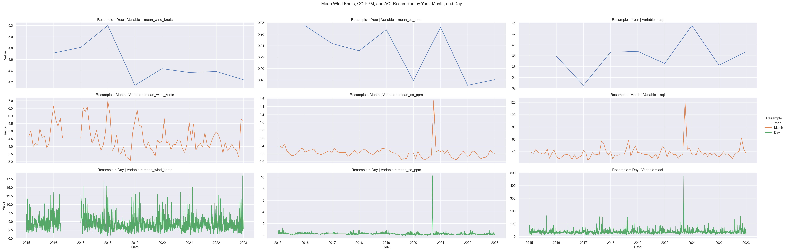
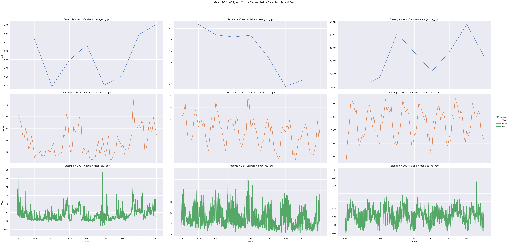

from sqlalchemy import create_engine, text
import dotenv
import datetime
import time
import os
import matplotlib.pyplot as plt
import seaborn as sns
import numpy as np
import pandas as pd
import missingno as msno
from summarytools import dfSummary
import sweetviz as sv
from ydata_profiling import ProfileReportAppendix
Bibliography
Airly. (n.d.). How does humidity affect air quality? All you need to know. airly.org/en/how-does-humidity-affect-air-quality-all-you-need-to-know/
AirNow. (n.d.). Using air quality index. www.airnow.gov/aqi/aqi-basics/using-air-quality-index
American Lung Association. (n.d.). Key findings: State of the air. www.lung.org/research/sota/key-findings
Broadbent, P., Grantz, D. A., & Leigh, A. (2023). Air quality in cities: Complexities and progress in mitigation. Frontiers in Sustainable Cities, 5. www.ncbi.nlm.nih.gov/pmc/articles/PMC10068020/
California Air Resources Board. (n.d.). Carbon monoxide & health. ww2.arb.ca.gov/resources/carbon-monoxide-and-health
Centers for Disease Control and Prevention, Agency for Toxic Substances and Disease Registry. (2014, October 21). Medical management guidelines for sulfur dioxide. wwwn.cdc.gov/TSP/MMG/MMGDetails.aspx?mmgid=249&toxid=46
Centers for Disease Control and Prevention, Agency for Toxic Substances and Disease Registry. (2023, April 12). Toxic substances portal - Nitrogen oxides. wwwn.cdc.gov/TSP/ToxFAQs/ToxFAQsDetails.aspx?faqid=396&toxid=69
Climate & Clean Air Commission. (n.d.). Methane. Retrieved August 14, 2024, from https://www.ccacoalition.org/short-lived-climate-pollutants/methane
Congressional Budget Office. (2023, May). Reducing emissions from transportation. www.cbo.gov/publication/60030
Environmental Protection Agency. (n.d.-a). Evolution of the Clean Air Act. www.epa.gov/clean-air-act-overview/evolution-clean-air-act
Environmental Protection Agency. (n.d.). Agriculture and aquaculture: Food for thought. Retrieved August 14, 2024, from https://www.epa.gov/snep/agriculture-and-aquaculture-food-thought
Environmental Protection Agency. (n.d.-b). Health effects of ozone pollution. www.epa.gov/ground-level-ozone-pollution/health-effects-ozone-pollution
Environmental Protection Agency. (n.d.-c). Particulate matter (PM) basics. www.epa.gov/pm-pollution/particulate-matter-pm-basics
Federal Transit Administration. (n.d.). NTD data tables. American Public Transportation Association. www.apta.com/research-technical-resources/transit-statistics/ntd-data-tables/
Fuller, R., Landrigan, P. J., Balakrishnan, K., Bathan, G., Bose-O’Reilly, S., Brauer, M., Caravanos, J., Chiles, T., Cohen, A., Corra, L., Cropper, M., Ferraro, G., Hanna, J., Hanrahan, D., Hu, H., Hunter, D., Janata, G., Kupka, R., Lanphear, B., . . . Yadama, G. N. (2022). Pollution and health: A progress update. The Lancet Planetary Health, 6(6), e535-e547. www.thelancet.com/journals/lanplh/article/PIIS2542-5196(22)00090-0/fulltext
Hog Wild Preserve. (n.d.). Pig, boar, or hog: What’s the difference? www.hogwildok.com/blog/336-pig,-boar,-or-hog-what-s-the-difference.html
Jacobs, E. T., Burgess, J. L., & Abbott, M. B. (2018). The Donora smog revisited: 70 years after the event that inspired the clean air act. American Journal of Public Health, 108(S2), S85-S88. www.ncbi.nlm.nih.gov/pmc/articles/PMC5922205/
Manisalidis, I., Stavropoulou, E., Stavropoulos, A., & Bezirtzoglou, E. (2020). Environmental and health impacts of air pollution: A review. Frontiers in Public Health, 8, 14. www.ncbi.nlm.nih.gov/pmc/articles/PMC7044178/
National Agricultural Statistics Service. (2017). 2017 Census of Agriculture. United States Department of Agriculture. www.nass.usda.gov/Publications/AgCensus/2017/Full_Report/Volume_1,_Chapter_1_US/
National Oceanic and Atmospheric Administration. (n.d.). What are a nautical mile and a knot? oceanservice.noaa.gov/facts/nautical-mile-knot.html
National Weather Service. (n.d.). Pressure and winds. www.weather.gov/source/zhu/ZHU_Training_Page/winds/pressure_winds/Pressure.htm
Oregon Encyclopedia. (n.d.). Interstate 5 in Oregon. www.oregonencyclopedia.org/articles/interstate_5_in_oregon/
Oregon Wildfire Response and Recovery. (n.d.). Wildfire prevention. wildfire.oregon.gov/prevention
Portland.gov. (n.d.). City of Portland Charter, Chapter 1. www.portland.gov/charter/1/2
Shandas, V., & George, L. (2009). Neighborhood, neighborhood, neighborhood: Spatial patterns of air toxins and implications for metroscape residents and urban planners. Metroscape, Winter 2009. pdxscholar.library.pdx.edu/cgi/viewcontent.cgi?article=1033&context=usp_fac
Trust for Public Land. (n.d.). Park data downloads. www.tpl.org/park-data-downloads
United States Census Bureau. (n.d.). Home page. www.census.gov/en.html
World Health Organization. (2014, March 25). 7 million premature deaths annually linked to air pollution. www.who.int/news/item/25-03-2014-7-million-premature-deaths-annually-linked-to-air-pollution
World Health Organization. (2022, October 31). Lead poisoning and health. www.who.int/news-room/fact-sheets/detail/lead-poisoning-and-health
Zhang, Y., Cooper, O. R., Gaudel, A., Thompson, A. M., Nédélec, P., Ogino, S. Y., & West, J. J. (2018). Tropospheric ozone change from 1980 to 2010 dominated by equatorward redistribution of emissions. Nature Geoscience, 11, 637-644. acp.copernicus.org/articles/18/15003/2018/
Additional Resources - EDA
Exploratory Data Analysis
We have new dataset metro_1mil.csv. This file was generated using a SQL statement that joins all relevant tables, filtering for metropolitan areas with populations less than or equal to 1 million. This approach limits our EDA to mid-sized metropolitan cities, such as Portland, Oregon.
df = pd.read_csv('https://raw.githubusercontent.com/wu-msds-capstones/Air-Quality-Index/main/data/metro_1mil.csv')Let’s plot the AQI data distribution
plt.figure(figsize=(10, 6))
sns.histplot(df['aqi'], kde=True)
plt.title('Distribution of Air Quality Index')
plt.xlabel('AQI')
plt.show()num_rows, num_columns = df.shapeThe DataFrame contains 147039 rows and 44 columns.
df = df[df['state'] == 'Oregon']
num_rows_oregon = df.shape[0]By filtering our Dataframe for Oregon state, our DataFrame contains 2922 rows.
Features Engineering
df['date'] = pd.to_datetime(df['date'])df = df.drop(['aqi_range', 'st_abbv'], axis=1)
df = df.drop(['mean_lead_micrograms_per_cubic_meter', 'max_lead_micrograms_per_cubic_meter'], axis=1)
df = df.drop(['mean_pm100_micrograms_per_cubic_meter', 'max_pm100_micrograms_per_cubic_meter'], axis=1)
df = df.drop(['mean_pm25_micrograms_per_cubic_meter', 'max_pm25_micrograms_per_cubic_meter'], axis=1)columns_to_impute = [
'mean_temperature_fahrenheit', 'max_temperature_fahrenheit',
'mean_pressure_millibars', 'max_pressure_millibars',
'mean_humidity_percent_relative_humidity', 'max_humidity_percent_relative_humidity',
'mean_wind_knots', 'max_wind_knots',
'mean_co_ppm', 'max_co_ppm',
'mean_no2_ppb', 'max_no2_ppb',
'mean_ozone_ppm', 'max_ozone_ppm',
'mean_so2_ppb', 'max_so2_ppb'
]
means = {col: df[col].mean() for col in columns_to_impute}
df = df.assign(**{col: df[col].fillna(means[col]) for col in columns_to_impute})Date Column Preprocessing:
- Converted the date column to DateTime objects for easier manipulation and analysis.
- Extracted additional time-based features: year, month, day of week, and quarter.
Feature Selection:
- Removed irrelevant columns to focus the analysis on pertinent variables.
- Retained features: pollutant, aqi, wind
Missing Value Treatment:
- Identified columns with missing values: most all of them
- Applied mean() imputation method for numerical columns.
- For categorical columns: n/a
Data Types and Memory Usage:
- Optimized data types to reduce memory usage (e.g., using categories for low-cardinality strings, int8/int16 for small integers).
Basic Statistics:
- Generated summary statistics for numerical columns using df.describe().
- Calculated frequency distributions for categorical variables.
Distribution Analysis:
- Plotted histograms and kernel density estimates for main numerical features.
Time Series Components:
- Decomposed time series data into trend, seasonality, and residual components for relevant variables.
Sweetviz Data Report
#my_report = sv.analyze(df)
#my_report.show_html()We have generated Sweetviz statistical report confirming the quality of EDA steps.
Advanced Data Analysis
We have also employed the ydata-profiling package, a powerful Time Series Analysis EDA package that offers more detailed analysis.
We have unlocked time series-specific features using ydata-profiling: We ensure our DataFrame is sorted or specify the sortby parameter, setting tsmode=True when creating the ProfileReport to allow Time Series Feature Identification
The ydata-profiling identifies time-dependent features using autocorrelation analysis.
For recognized time series features, the histograms are replaced with line plots and feature details include new autocorrelation and partial autocorrelation plots.
To handle Multi-Entity Time Series Data, In our case, with category_id, each pollutants represents a distinct time series. For optimal analysis, we filter and profile each pollutant separately
#for group in df.groupby("category_id"):
# # Running 1 profile per station
# profile = ProfileReport(
# group[1],
# minimal=True,
# sortby="date",
# # title=f"Air Quality profiling - Site Num: {group[0]}"
# )
# profile.to_file(f"Ts_Profile_{group[0]}.html")#profile = ProfileReport(
# group[1],
# tsmode=True,
# sortby="date",
# # title=f"Air Quality profiling - Site Num: {group[0]}"
#)
#profile.to_file("your_report2.html")#df.to_pickle('/data/df.pkl')To conclude our exploratory data analysis (EDA) process consisted of two complementary approaches:
- Manual Investigation: We conducted an in-depth, hands-on examination of the dataset.
- Automated Analysis: We leveraged two powerful EDA packages: Sweetviz For quick, visual data summaries, ydata-profiling for more detailed, customizable reports
These methods allowed us to thoroughly evaluate key data quality aspects, including:
- Class balance in categorical variables
- Presence and distribution of missing values (NaN)
- Feature distributions and correlations
- Potential time-series characteristics
This multi-faceted approach ensures a robust understanding of our dataset’s structure, quality, and potential challenges before proceeding with further analysis.
df_aqi = df[['date', 'aqi']]
df_aqi = df_aqi.set_index('date')Time Series Visualization in Portland
Carbon Monoxyde (CO), Wind and Air Quality Index (AQI)
CO pollutant refers to carbon monoxide, which is a colorless, odorless, and tasteless gas that can be harmful to human health and the environment. Here’s some key information about CO as a pollutant:
Primarily produced by incomplete combustion of carbon-containing fuels Major sources include vehicle exhaust, industrial processes, and some natural sources like volcanoes
- Slightly less dense than air
- Highly flammable
sns.set_theme(style="darkgrid")
# Prepare wind data
df_wind = df[['date', 'mean_wind_knots', 'max_wind_knots']]
df_wind = df_wind.set_index('date')
df_wind_year = df_wind.resample('YE').mean().assign(Resample='Year')
df_wind_month = df_wind.resample('ME').mean().assign(Resample='Month')
df_wind_day = df_wind.resample('D').mean().assign(Resample='Day')
df_wind_combined = pd.concat([df_wind_year, df_wind_month, df_wind_day])
df_wind_combined.ffill(inplace=True)
df_wind_combined.reset_index(inplace=True)
# Prepare CO data
df_co = df[['date', 'mean_co_ppm', 'max_co_ppm']]
df_co = df_co.set_index('date')
df_co_year = df_co.resample('YE').mean().assign(Resample='Year')
df_co_month = df_co.resample('ME').mean().assign(Resample='Month')
df_co_day = df_co.resample('D').mean().assign(Resample='Day')
df_co_combined = pd.concat([df_co_year, df_co_month, df_co_day])
df_co_combined.ffill(inplace=True)
df_co_combined.reset_index(inplace=True)
# Prepare AQI data
df_aqi = df[['date','aqi']]
df_aqi = df_aqi.set_index('date')
df_aqi_year = df_aqi.resample('YE').mean().assign(Resample='Year')
df_aqi_month = df_aqi.resample('ME').mean().assign(Resample='Month')
df_aqi_day = df_aqi.resample('D').mean().assign(Resample='Day')
df_aqi_combined = pd.concat([df_aqi_year, df_aqi_month, df_aqi_day])
df_aqi_combined.ffill(inplace=True)
df_aqi_combined.reset_index(inplace=True)
# Merge the three DataFrames
df_combined = pd.merge(df_wind_combined, df_co_combined, on=['date', 'Resample'], suffixes=('_wind', '_co'))
df_combined = pd.merge(df_combined, df_aqi_combined, on=['date', 'Resample'])
# Melt the DataFrame for FacetGrid
df_melted = df_combined.melt(id_vars=['date', 'Resample'], value_vars=['mean_wind_knots', 'mean_co_ppm', 'aqi'],
var_name='Variable', value_name='Value')
# Set the figure size
plt.figure(figsize=(10, 18))
# Plot using seaborn
g = sns.FacetGrid(df_melted, row='Resample', col='Variable', hue='Resample', sharex=True, sharey=False, height=4, aspect=3)
g.map(sns.lineplot, 'date', 'Value')
# Adjust the plot
g.add_legend()
g.set_axis_labels('Date', 'Value')
plt.subplots_adjust(top=0.9)
g.fig.suptitle('Mean Wind Knots, CO PPM, and AQI Resampled by Year, Month, and Day')
plt.show()<Figure size 960x1728 with 0 Axes>
Nitrogen Dioxide (NO2), Sulfur Dioxyde (SO2) and Ozone (O₃)
NO2 (nitrogen dioxide) is an important air pollutant. - Reddish-brown gas with a pungent odor - Part of a group of pollutants known as nitrogen oxides (NOx)
SO2 (sulfur dioxide) is an important air pollutant. - Colorless gas with a sharp, pungent odor - Highly soluble in water
Ozone (O₃) as a pollutant is a complex topic, as it can be both beneficial and harmful depending on its location in the atmosphere. - Colorless to pale blue gas with a distinctive smell - Highly reactive molecule composed of three oxygen atoms
import pandas as pd
import seaborn as sns
import matplotlib.pyplot as plt
sns.set_theme(style="darkgrid")
# Filter and resample SO2 data
df_so2 = df[['date', 'mean_so2_ppb', 'max_so2_ppb']]
df_so2 = df_so2.set_index('date')
df_so2_year = df_so2.resample('YE').mean().assign(Resample='Year')
df_so2_month = df_so2.resample('ME').mean().assign(Resample='Month')
df_so2_day = df_so2.resample('D').mean().assign(Resample='Day')
df_so2_combined = pd.concat([df_so2_year, df_so2_month, df_so2_day])
df_so2_combined.ffill(inplace=True)
df_so2_combined.reset_index(inplace=True)
# Filter and resample NO2 data
df_no2 = df[['date', 'mean_no2_ppb', 'max_no2_ppb']]
df_no2 = df_no2.set_index('date')
df_no2_year = df_no2.resample('YE').mean().assign(Resample='Year')
df_no2_month = df_no2.resample('ME').mean().assign(Resample='Month')
df_no2_day = df_no2.resample('D').mean().assign(Resample='Day')
df_no2_combined = pd.concat([df_no2_year, df_no2_month, df_no2_day])
df_no2_combined.ffill(inplace=True)
df_no2_combined.reset_index(inplace=True)
# Filter and resample ozone data
df_ozone = df[['date', 'mean_ozone_ppm', 'max_ozone_ppm']]
df_ozone = df_ozone.set_index('date')
df_ozone_year = df_ozone.resample('YE').mean().assign(Resample='Year')
df_ozone_month = df_ozone.resample('ME').mean().assign(Resample='Month')
df_ozone_day = df_ozone.resample('D').mean().assign(Resample='Day')
df_ozone_combined = pd.concat([df_ozone_year, df_ozone_month, df_ozone_day])
df_ozone_combined.ffill(inplace=True)
df_ozone_combined.reset_index(inplace=True)
# Merge the three DataFrames
df_combined = pd.merge(df_so2_combined, df_no2_combined, on=['date', 'Resample'], suffixes=('_so2', '_no2'))
df_combined = pd.merge(df_combined, df_ozone_combined, on=['date', 'Resample'])
# Melt the DataFrame for FacetGrid
df_melted = df_combined.melt(id_vars=['date', 'Resample'],
value_vars=['mean_so2_ppb', 'mean_no2_ppb', 'mean_ozone_ppm'],
var_name='Variable', value_name='Value')
# Set the figure size
plt.figure(figsize=(15, 20))
# Plot using seaborn
g = sns.FacetGrid(df_melted, row='Resample', col='Variable', hue='Resample',sharex=True, sharey=False, height=6, aspect=2)
g.map(sns.lineplot, 'date', 'Value')
# Adjust the plot
g.add_legend()
#g.set_axis_labels('Date', 'Value (PPB/PPM)')
plt.subplots_adjust(top=0.9)
g.fig.suptitle('Mean SO2, NO2, and Ozone Resampled by Year, Month, and Day')
plt.show()<Figure size 1440x1920 with 0 Axes>
Additional Resources - Machine Learning Metrics Table
| Technique/Metric | Description | Purpose/Formula | Scenario: Cancer prediction |
|---|---|---|---|
| 1. Train-Test Split | Split the dataset into training and testing subsets | Assess model performance on unseen data to detect overfitting and ensure generalizability | Always used; crucial for unbiased evaluation of model performance |
| 2. Cross-Validation | Divide data into k subsets and train the model k times, using a different subset as test set each time | Provides robust estimate of model performance by averaging results over multiple splits | Useful for smaller datasets or when data collection is expensive (e.g., rare cancer types) |
| 3. Confusion Matrix | Table comparing predicted and actual values in classification | Metrics: True Positives (TP), True Negatives (TN), False Positives (FP), False Negatives (FN) | Fundamental for understanding model performance in classification tasks, like cancer detection |
| 4. Accuracy | Ratio of correctly predicted instances to total instances | \(\frac{TP + TN}{TP + TN + FP + FN}\) | Used when classes are balanced; less suitable for rare cancer detection due to class imbalance |
| 5a. Precision | Ratio of correctly predicted positive observations to total predicted positives | \(\frac{TP}{TP + FP}\) | Important when false positives are costly (e.g., unnecessary biopsies or treatments) |
| 5b. Recall (Sensitivity) | Ratio of correctly predicted positive observations to all actual positive observations | \(\frac{TP}{TP + FN}\) | Critical in cancer detection to minimize false negatives (missed cancer cases) |
| 5c. F1-Score | Harmonic mean of Precision and Recall | \(2 \times \frac{\text{Precision} \times \text{Recall}}{\text{Precision} + \text{Recall}}\) | Balances precision and recall; useful when seeking a compromise between false positives and false negatives |
| 6. ROC Curve and AUC | ROC: Graph of true positive rate vs false positive rate at various thresholds. AUC: Area under ROC curve | Higher AUC indicates better model performance | Useful for comparing models and choosing optimal threshold, especially in diagnostic tests |
| 7. Mean Absolute Error (MAE) | Average of absolute differences between predicted and actual values | \(\frac{1}{n} \sum_{i=1}^{n} \|y_i - \hat{y}_i\|\) | Used in regression tasks, e.g., predicting survival time; less sensitive to outliers than MSE |
| 8a. Mean Squared Error (MSE) | Average of squared differences between predicted and actual values | \(\frac{1}{n} \sum_{i=1}^{n} (y_i - \hat{y}_i)^2\) | Used in regression; penalizes large errors more, suitable when large errors are particularly undesirable |
| 8b. Root Mean Squared Error (RMSE) | Square root of MSE | \(\sqrt{\text{MSE}}\) | Same as MSE, but in the original unit of the target variable, making it more interpretable |
| 9. R-squared | Proportion of variance in dependent variable predictable from independent variables | \(1 - \frac{\sum_{i=1}^{n} (y_i - \hat{y}_i)^2}{\sum_{i=1}^{n} (y_i - \bar{y})^2}\) | Used in regression to assess overall fit; indicates how well the model explains the variance in the data |
| 10a. Akaike Information Criterion (AIC) | Measures relative quality of statistical model for given data | \(2k - 2\ln(L)\) where \(k\) is number of parameters and \(L\) is likelihood | Used for model selection; helps prevent overfitting by penalizing complex models |
| 10b. Bayesian Information Criterion (BIC) | Similar to AIC but with stronger penalty term for number of parameters | \(k\ln(n) - 2\ln(L)\) where \(n\) is number of observations | Also used for model selection; tends to favor simpler models compared to AIC |